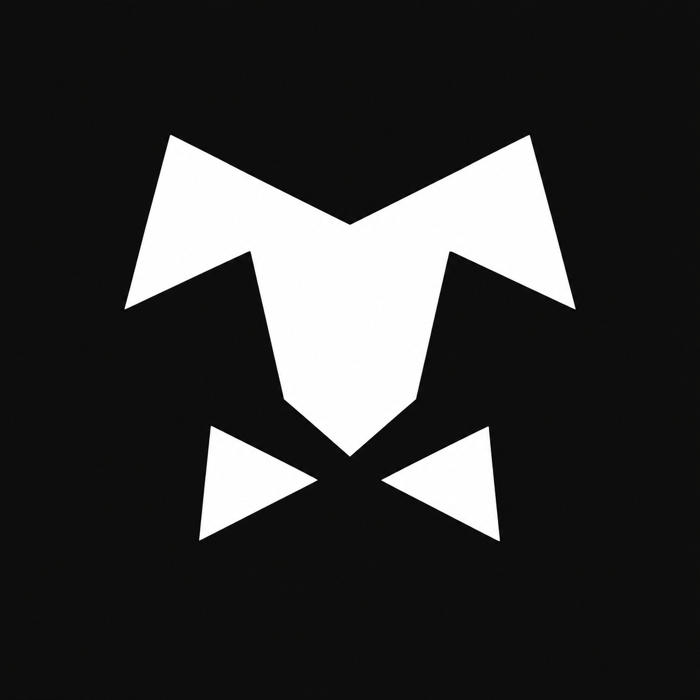

FactoryMemory
So the next technician doesn’t have to start from scratch.
I’m Karl. I work in IT, I’m building FactoryMemory, and I make music as wittikay. Here’s a little of each.
Take a look at what I do.
Pick what interests you.
My experience in IT and the project it inspired.
2 stories for everyone
So the next technician doesn’t have to start from scratch.
Helping people get back to work when the technology stops.
FactoryMemory is still in development. I’m sharing the idea here; the code and technical details stay private.
I keep digging because I want to understand.
When something doesn’t make sense to me, I ask questions, look into it, and try to piece it together. Once I understand what I’m working with, I can use it. That’s the part I enjoy, whether I’m troubleshooting at work or learning something for a project.
AI has become part of that process. I use it to help me learn, troubleshoot, write documentation, and build things. I still do my own research and check what I’m being told.
“If I don’t understand it, I feel lost, so I find my way home.”What keeps me digging
And if you’re wondering about the name: “wittikay” comes from “with a K,” because that’s how you spell Karl.
TEKsystems · Manufacturing environment
I help keep the technology running at a manufacturing site in Cleveland, Tennessee. Some days that means a device or account problem; other days, it means following a connection through the network.
Batteries Plus
I repaired consumer electronics, helped with inventory, and talked customers through their options. It taught me a lot about explaining technical problems in a way that makes sense to the person in front of me.
I release experimental electronic music as wittikay. I enjoy the whole process, from trying a sound in Ableton to sharing a finished track.
Listen on SoundCloud
If you’re hiring, have a project in mind, or just want to say hello,
I’d be glad to hear from you.